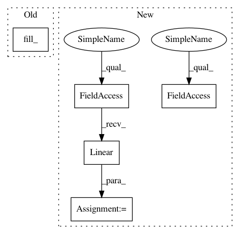

a049ecb81701dd61744cbbf5922c4dc2ee6542fa,ch07/lib/dqn_model.py,NoisyFactorizedLinear,__init__,#NoisyFactorizedLinear#Any#Any#Any#Any#,40
Before Change
def __init__(self, in_features, out_features, sigma_zero=0.4, bias=True):
super(NoisyFactorizedLinear, self).__init__(in_features, out_features, bias=bias)
sigma_init = sigma_zero / math.sqrt(in_features)
self.sigma_weight = nn.Parameter(torch.Tensor(out_features, in_features).fill_(sigma_init))
self.register_buffer("epsilon_input", torch.zeros(1, in_features))
self.register_buffer("epsilon_output", torch.zeros(out_features, 1))
if bias:
After Change
nn.Conv2d(input_shape[0], 32, kernel_size=8, stride=4),
nn.ReLU(),
nn.Conv2d(32, 64, kernel_size=4, stride=2),
nn.ReLU(),
nn.Conv2d(64, 64, kernel_size=3, stride=1),
nn.ReLU()
)
OutLayer = NoisyLinear if noisy_net else nn.Linear
conv_out_size = self._get_conv_out(input_shape)
self.fc = nn.Sequential(
nn.Linear(conv_out_size, 512),
nn.ReLU(),
OutLayer(512, n_actions, writer=writer)
)
def _get_conv_out(self, shape):
o = self.conv(Variable(torch.zeros(1, *shape)))
return int(np.prod(o.size()))
In pattern: SUPERPATTERN
Frequency: 3
Non-data size: 5
Instances
Project Name: PacktPublishing/Deep-Reinforcement-Learning-Hands-On
Commit Name: a049ecb81701dd61744cbbf5922c4dc2ee6542fa
Time: 2017-10-28
Author: max.lapan@gmail.com
File Name: ch07/lib/dqn_model.py
Class Name: NoisyFactorizedLinear
Method Name: __init__
Project Name: PacktPublishing/Deep-Reinforcement-Learning-Hands-On
Commit Name: a049ecb81701dd61744cbbf5922c4dc2ee6542fa
Time: 2017-10-28
Author: max.lapan@gmail.com
File Name: ch07/lib/dqn_model.py
Class Name: NoisyFactorizedLinear
Method Name: __init__
Project Name: pytorch/examples
Commit Name: d5a75ba09ae0595ca284fd806475eb8d3f771387
Time: 2017-01-17
Author: adam.paszke@gmail.com
File Name: word_language_model/model.py
Class Name: RNNModel
Method Name: __init__